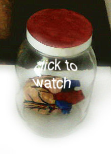
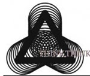
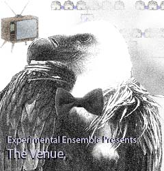
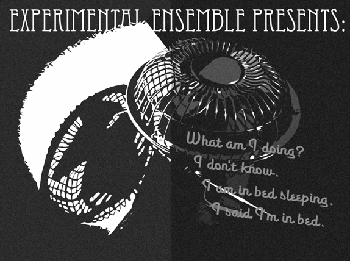

artist, brooklyn n.y.
film and performance art |
|
|
8-10 skate pod A beautiful skate egg pod found on the beach was the inspiration behind designing this website, an animal similar to a sting-ray. A pod reveals its insides, muliplies and transforms into an adult in this animated video piece. |
|
4-10 divination2.0 On April 23rd, 2010 was an opening in celebration of a project called divination 2.0 at 58 North 6th Media Labs, Brooklyn. The project has been an exercise in bringing the emergent experience of our social/computerized self to a precise space, creating an architectural feeling with video and sound using visuals of items like screws, wires, and other small parts. Sound design: Nick Nelson, Installation voice: Leda Maniatakou |
|
|  | 11-09 heart search
A tiny heart-shaped video sculpture displayed in the Play With Fire Video Festival. |
|  | 6-09 THINK THINK THINK WHY WHY WHY applies the zesty and strengthening spirit of do-it-yourself to a new frontier: spirituality and religion. The Founding Members have precisely designed an easy-to-use structure, into which participants insert thought-provoking tasks and personal charm, which has formed a spiritual community without the usual traditions of religion. 266 West 37th St was the site of their first welcome center, from June 3-8, 2009, which hosted multiple events and workshops. Collaborators: Kristin Trethewey & Jean Ann Douglass |
|  | Animalistic Meat Activities: Fit for Consumption, A multi-media melee of carnivorous proportions. May 22, 2009 330 Melrose, Rooftop. |
11-08 How to Disagree Without Being Disagreeable As a part of the Bushwick BETA spaces festival in 2008 Emily Schleiner and Erin Aurthur read: "How to Disagree Without Being Disagreeable." They fed each other dishes of vegetables until the food started coming up out of their mouths, onto the ground, and formed into the decaying words of a Molotov cocktail recipe in their stop-motion plant footage.
|
|
12-08 a picture is worth a thousand words This performance took place during "A Night of Performances by the Students from the Performance and Interactive Media Arts Program" at the Brooklyn Center for the Performing Arts, New Workshop Theater in Brooklyn . We decided to compile and perform photos, video and slides imbued with our weighty personal memories using a slide projector, an overhead projector, and two video projectors, a plethora of media-viewers from different eras. Collaborator: Kristin Trethewey
|
|
|  | Experimental Ensemble combines a dream world of sound generated imagery and Noir-style film, all while asking the question: "what am I doing?" Amidst this media display of collaboratively composed text and scintillating visuals, live performers bring the space to life, using repurposed Noir symbols to create beautiful, eerie, gyrating rhythms. Crooked cops, detectives, tipsters, speakeasy owners, private dicks, secretaries, dames, and villains make themselves present. "Help me fish my feelings out of this shadow called life. I feel like the slow burn of the longest cigarette in the world . . . " -- Experimental Ensemble, Performance and Interactive Media Arts, Brooklyn College. December 11, 2008 Monkeytown, Brooklyn. |
|
8-08 Heartbeat; To a photon time does not exist. This film is a re-mix of a heartbeat audio clip and a handmade collage. The text making up the heart rate monitor line says: To a photon time does not exist. I gathered this from reading about quantum physics. Physicists speculate that traveling faster than the speed of light (299,792,458 meters per second) will make particles move backwards in time. What must this seem like from the perspective of a photon? (Sources: Schrödinger's Kittens and the Search for Reality by John Gribbin, 1996 and QED: The Strange Theory of Light and Matter by Richard P. Feynman, 1998) |
|
|
6-08 Liberty Piñata This piñata of the Statue of Liberty is stuffed with credit cards and candy. Pennies are on a portion of the outside. This performance happened on Governor's Island in the Figment Art Festival in New York City. Collaborators: Celina Thomas and Donald Daedalus. |
4-08 Piñata for the Post Ouch My Eye in Seattle requested artwork to be sent through the post to be shown as is, stamps and all. This is a piñata shaped like a life-saver intended for the postal service to unintentionally break it. |
|

| recent and upcoming events | ||
|
divination 2.0:Presentation in Trondheim, Norway, November 4-6 2010
|
||